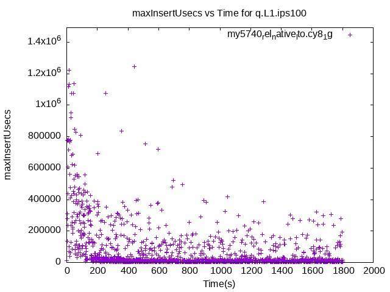

These have results per 1-second interval for: insert rate (IPS), max insert reponse time, query rate (QPS) and max query response time.
The results are from 1 client while the test may have N clients where N > 1.
The test is run with a rate limit for the number of inserts/s. In some cases the DBMS is unable to sustain that rate. When a DBMS can sustain that rate IPS will be a horizontal line.
Contents
- my5651_rel.cy8_1g: IPS, max insert response time, QPS and max query response time
- my5740_rel_native_lto.cy8_1g: IPS, max insert response time, QPS and max query response time
- my8022_rel_native_lto.cy9_1g: IPS, max insert response time, QPS and max query response time
- my8028_rel_native_lto.cy9_1g: IPS, max insert response time, QPS and max query response time
- my8031_rel_native_lto.cy9_1g: IPS, max insert response time, QPS and max query response time
- my8032_rel_native_lto.cy9_1g: IPS, max insert response time, QPS and max query response time
my5651_rel.cy8_1g: IPS
my5651_rel.cy8_1g
my5651_rel.cy8_1g: max insert response time
my5651_rel.cy8_1g
my5651_rel.cy8_1g: QPS
my5651_rel.cy8_1g
my5651_rel.cy8_1g: max query response time
my5651_rel.cy8_1g
my5740_rel_native_lto.cy8_1g: IPS
my5740_rel_native_lto.cy8_1g
my5740_rel_native_lto.cy8_1g: max insert response time
my5740_rel_native_lto.cy8_1g
my5740_rel_native_lto.cy8_1g: QPS
my5740_rel_native_lto.cy8_1g
my5740_rel_native_lto.cy8_1g: max query response time
 my5740_rel_native_lto.cy8_1g
my5740_rel_native_lto.cy8_1g
my8022_rel_native_lto.cy9_1g: IPS
my8022_rel_native_lto.cy9_1g
my8022_rel_native_lto.cy9_1g: max insert response time
my8022_rel_native_lto.cy9_1g
my8022_rel_native_lto.cy9_1g: QPS
my8022_rel_native_lto.cy9_1g
my8022_rel_native_lto.cy9_1g: max query response time
my8022_rel_native_lto.cy9_1g
my8028_rel_native_lto.cy9_1g: IPS
my8028_rel_native_lto.cy9_1g
my8028_rel_native_lto.cy9_1g: max insert response time
 my8028_rel_native_lto.cy9_1g
my8028_rel_native_lto.cy9_1g
my8028_rel_native_lto.cy9_1g: QPS
my8028_rel_native_lto.cy9_1g
my8028_rel_native_lto.cy9_1g: max query response time
my8028_rel_native_lto.cy9_1g
my8031_rel_native_lto.cy9_1g: IPS
my8031_rel_native_lto.cy9_1g
my8031_rel_native_lto.cy9_1g: max insert response time
my8031_rel_native_lto.cy9_1g
my8031_rel_native_lto.cy9_1g: QPS
my8031_rel_native_lto.cy9_1g
my8031_rel_native_lto.cy9_1g: max query response time
my8031_rel_native_lto.cy9_1g
my8032_rel_native_lto.cy9_1g: IPS
my8032_rel_native_lto.cy9_1g
my8032_rel_native_lto.cy9_1g: max insert response time
my8032_rel_native_lto.cy9_1g
my8032_rel_native_lto.cy9_1g: QPS
my8032_rel_native_lto.cy9_1g
my8032_rel_native_lto.cy9_1g: max query response time
my8032_rel_native_lto.cy9_1g